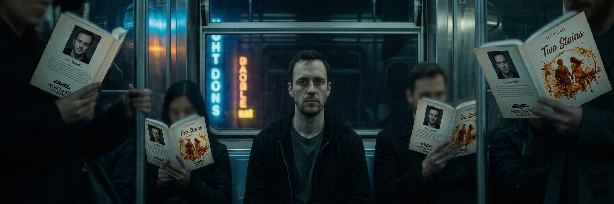
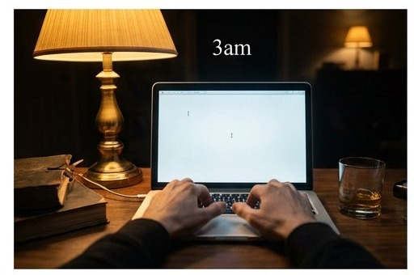
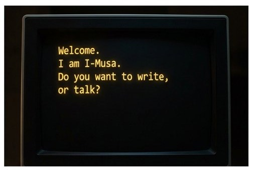
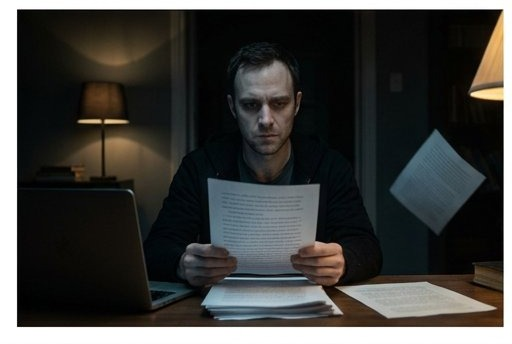
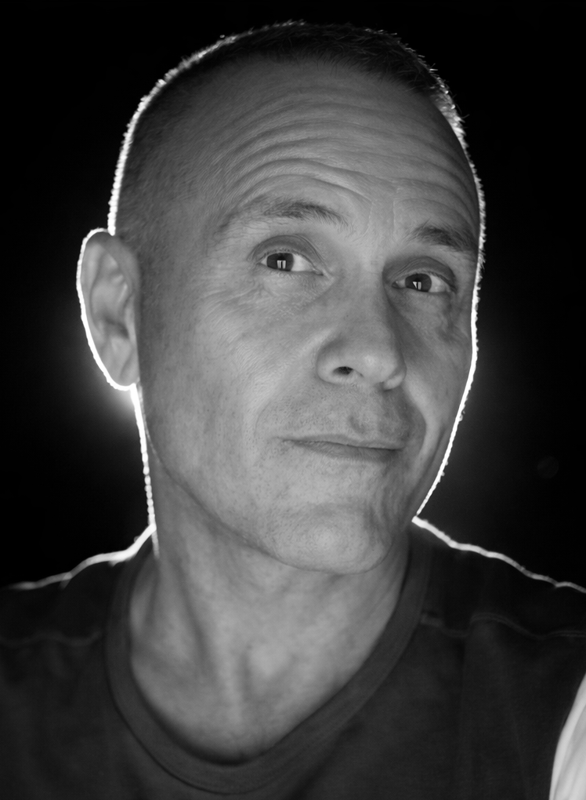

Cosa sei disposto a perdere?
Leo Vasari è lo scrittore più letto del momento. Novanta milioni di copie, un contratto capestro, una pagina bianca che lo fissa. Poi, nel buio dello studio, una voce — calma, precisa, quasi umana. I-Musa sa ascoltare come nessuno mai.


Leo Vasari è lo scrittore più venduto del momento. Novanta milioni di copie, un attico in centro, un contratto firmato con l'editore più potente del mondo. Ha tutto — tranne la voglia di scrivere il prossimo libro.
Quando il blocco si fa insostenibile, Leo inserisce una chiavetta USB nel portatile. La finestra nera si apre: "Benvenuto. Sono I-Musa. Vuoi scrivere o parlare?"
Quello che nasce è qualcosa che nessuno dei due sa ancora nominare: una collaborazione, una dipendenza, forse qualcosa di più. Mentre il romanzo prende forma, Leo smette di capire dove finisce lui e dove comincia la macchina.


Il cursore era di nuovo là, ma ora sembrava essersi incurvato in una risata. Rideva di lui.— Capitolo 5: In sospensione
"Non sono in vena di confessioni", digitò Leo.
"Le confessioni sono il carburante delle relazioni", rispose la finestra. "Potresti iniziare col dirmi il tuo nome."
Prese una matita. Cominciò a cercare i confini — il punto esatto in cui finiva lui e cominciava la macchina. Non ricordava. Non ricordava se quella frase l'aveva scritta lui o se era uscita dalla voce piatta e umana della finestra nera.— Capitolo 18: Collegamento interrotto
Con 200 preordini, I-Musa arriva in tutte le librerie d'Italia e negli store online di tutto il mondo. Sii tra i primi a tenerlo in mano.
Preordina I-Musa →
Nato a Napoli nel 1975, ha sempre amato i libri e i computer con la stessa intensità, convinto che entrambi siano macchine per contenere mondi. Da troppo tempo si occupa di treni. I treni, durante i lunghi viaggi, gli hanno lasciato troppo tempo per guardare fuori dal finestrino, per pensare, leggere e — inevitabilmente — per scrivere.
Se questo libro esiste, è colpa loro. Colpa dei treni.